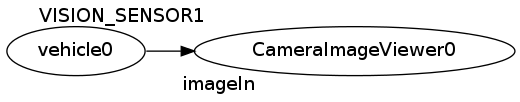
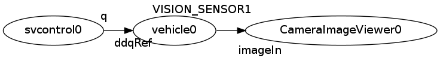

Connect¶
In this tutorial, we will learn how to connect simulation to our own controller.
Note
Please finish Create your own project tutorial, before proceed.
Configuration¶
Before proceed, create configuration file named “rtc.conf” under the current folder (or place it to /etc/rtc.conf if you want to apply the configuration globally) with following content.
1 2 3 4 5 6 7 8 | corba.nameservers: 127.0.0.1
naming.formats: %n.rtc
logger.enable: YES
logger.log_level: NORMAL
logger.file_name: stdout
manager.shutdown_onrtcs: NO
manager.is_master: YES
manager.modules.load_path: ., /usr/lib, /usr/local/lib
|
Basic structure of project file¶
As we have learned in previous tutorial, project file in hrpsys-gazebo-simulatior is written in xml format. You can use your favorite text editor to create the project file.
Open the project file with your text editor:
$ emacs mysimulation.xml
After the editor is opened, you will see following contents.
1 2 3 4 5 6 7 8 9 10 11 12 13 14 15 16 17 18 19 20 21 22 23 | <?xml version="1.0" encoding="UTF-8" standalone="no"?>
<grxui>
<mode name="Simulation">
<item class="com.generalrobotix.ui.item.GrxRTSItem" name="untitled" select="true">
<property name="PA10Controller(Robot)0.period" value="0.005"/>
<property name="HGcontroller0.period" value="0.005"/>
<property name="HGcontroller0.factory" value="HGcontroller"/>
<property name="connection" value="HGcontroller0.qOut:PA10Controller(Robot)0.qRef"/>
<property name="connection" value="HGcontroller0.dqOut:PA10Controller(Robot)0.dqRef"/>
<property name="connection" value="HGcontroller0.ddqOut:PA10Controller(Robot)0.ddqRef"/>
</item>
<item class="com.generalrobotix.ui.item.GrxModelItem" name="simple_vehicle_with_camera" select="true" url="model://simple_vehicle_with_camera">
<property name="isRobot" value="true"/>
<property name="rtcName" value="vehicle0"/>
<property name="inport" value="qRef:JOINT_VALUE"/>
<property name="inport" value="dqRef:JOINT_VELOCITY"/>
<property name="inport" value="ddqRef:JOINT_ACCELERATION"/>
<property name="outport" value="q:JOINT_VALUE"/>
<property name="outport" value="VISION_SENSOR1:/simple_vehicle_with_camera/VISION_SENSOR1/image_raw:VISION_SENSOR"/>
</item>
..snip..
</mode>
</grxui>
|
To connect the simulator to the external control process, we will modify com.generalrobotix.ui.item.GrxRTSItem configuration item type.
In com.generalrobotix.ui.item.GrxRTSItem configuration item type, the name “.period” is used to specify execution cycle of each RT-components. The name “.factory” is used to specify the name of shared library used to create the instance of the component (described later). Properties with name “connection” specify the connection between the components.
Create instance of RT-component¶
hrpsys-base is not only a simulation environment, but also provide various components which can be used in your system.
Please refer to this page to see list of all the available components:
http://fkanehiro.github.io/hrpsys-base/
In the previous tutorial, we have configured our project to use “simple_vehicle_with_camera” robot model which has virtual camera interface. In this tutorial, let’s use CameraImageViewer component to monitor the camera input.
To use the component, we first define the factory property to create an instance of the component. In below example, “CameraImageViewer0” is the name of the instance. “CameraImageViewer” is the name of the component itself. We also define the period property to set the execution cycle to 0.5 (twice a second).
Then, we also define a connection from “VISION_SENSOR1” port of “vehicle0” robot model to “imageIn” port of “CameraImageViewer0” component instance.
1 2 3 4 5 6 | <item class="com.generalrobotix.ui.item.GrxRTSItem" name="untitled" select="true">
<property name="vehicle0.period" value="0.005"/>
<property name="CameraImageViewer0.factory" value="CameraImageViewer"/>
<property name="CameraImageViewer0.period" value="0.5"/>
<property name="connection" value="vehicle0.VISION_SENSOR1:CameraImageViewer0.imageIn"/>
</item>
|
As a result, following system will be generated from this configuration:

Now, we have finished configuring our system. Let’s open the project in hrpsys-gazebo-simulator:
$ hrpsys-gazebo-simulator mysimulation.xml $HOME/.gazebo/models/simple_vehicle_with_camera.world -endless
Connect with original RT-component¶
Here, we create original RT-component named “svcontrol”. First invoke following command to generate a skeleton code:
$ rtc-template -bcxx --module-name=svcontrol --outport=q:TimedDoubleSeq
Uncomment following line in generated svcontrol.h:
virtual RTC::ReturnCode_t onExecute(RTC::UniqueId ec_id);
Uncomment and add following lines in svcontrol.cpp:
RTC::ReturnCode_t svcontrol::onExecute(RTC::UniqueId ec_id)
{
m_q.data.length(4);
m_q.data[0] = 10.0;
m_q.data[1] = 10.0;
m_q.data[2] = 10.0;
m_q.data[3] = 10.0;
m_qOut.write();
return RTC::RTC_OK;
}
Then compile the component:
$ make -f Makefile.svcontrol
This component will give constant power to all the joints of the robot model.
Add following lines to mysimulation.xml to instantiate and connect the svcontrol component.
1 2 3 4 5 6 7 8 9 | <item class="com.generalrobotix.ui.item.GrxRTSItem" name="untitled" select="true">
<property name="vehicle0.period" value="0.005"/>
<property name="CameraImageViewer0.factory" value="CameraImageViewer"/>
<property name="CameraImageViewer0.period" value="0.5"/>
<property name="svcontrol0.factory" value="svcontrol"/>
<property name="svcontrol0.period" value="0.05"/>
<property name="connection" value="vehicle0.VISION_SENSOR1:CameraImageViewer0.imageIn"/>
<property name="connection" value="svcontrol0.q:vehicle0.dqRef"/>
</item>
|
As a result, following system will be generated from this configuration:

Now, we have finished configuring our system. Let’s open the project in hrpsys-gazebo-simulator and confirm the result:
$ hrpsys-gazebo-simulator mysimulation.xml $HOME/.gazebo/models/simple_vehicle_with_camera.world -endless